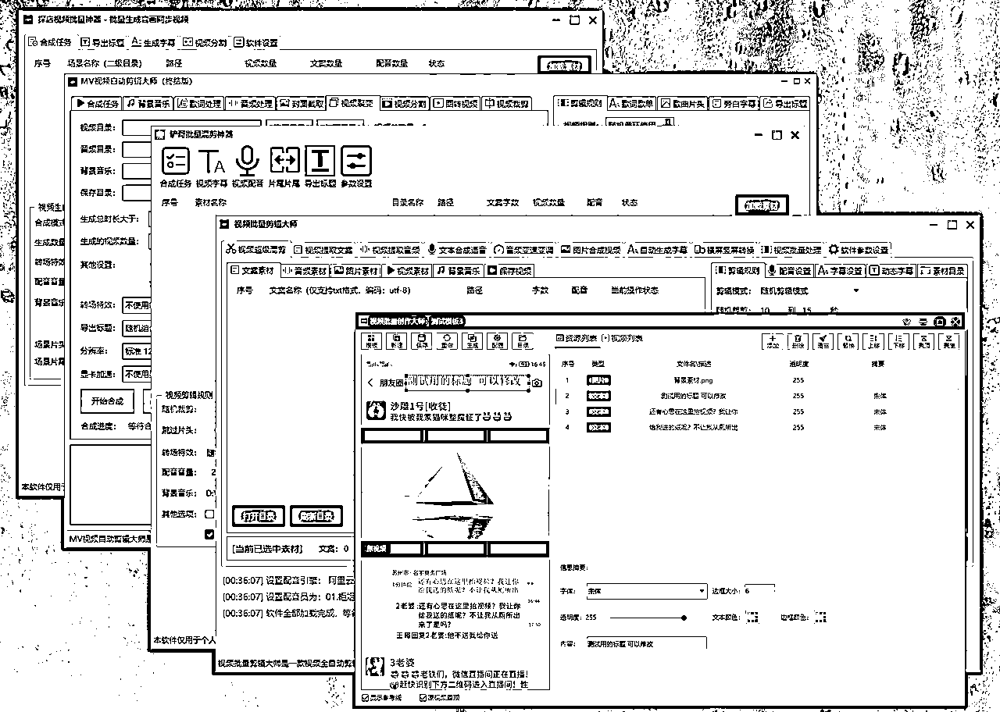

来源：https://bh5pm72xfy.feishu.cn/docx/PQ96dC90Ao6FcJxlgBVcqZGEnaf
你好，我是铲哥，见字如见面，很高兴认识你！
先做个简单的自我介绍，我出生在洛阳，一个三线小城市。刚从学校步入社会的时候，我也和大多数人一样，是一名普通的不能再普通的底层打工人，拿着2000不到的月薪，未来的人生一眼就可以望到尽头。
都说有的人出生就在罗马，有的人出生就是牛马，很显然，我属于后者，无资源、无人脉、无资金，是一名合格的“三无人员”。
也正是如此，互联网成了我唯一的出路，也彻底改变了我的人生轨迹。
从月薪2000的打工者，到赚到人生中第一个100w，再到买跑车。做互联网这十几年，我是如何一步一步成长起来的？请静下心来，容我和你细细分享。
可能是我天生就对电脑方面比较感兴趣，所以非常崇拜叫做“黑客”的电脑高手，之后便一发不可收拾，甚至已经到了入“废寝忘食”的境界。
那时候还是未成年，同龄人还在天天守着QQ农场“偷菜”，玩的不亦说乎，同样是未成年的我却在研究编程，当时通过各种捣鼓才把易语言（一款中文编程软件）安装到电脑上，写的第一个程序大概如下：
没错，就是一行代码，点一下按钮，然后弹出来一个信息框提示：“你好”。其实也算不上程序，但是这种可以看到结果的正反馈非常重要，如果没有踏出这第一步，也就不会有现在的我。
之后无论做什么，我都会想办法让自己在最快的速度得到正反馈，比如出第一单、赚到第一块钱等等，这种正反馈可以帮助我找到更好的动力和信心，这种习惯也一直持续到现在。
很多人做项目，别说三个月，甚至连一周都坚持不了，就开始怀疑这个项目到底行不行，是不是已经做烂了，然后就开始打退堂鼓，最终失败也是必然的结果。
找到属于自己的正反馈，它会不断地带你走向成功！
通过对互联网的不断了解和对“黑客”的崇拜，我踏入了一个新领域：网络安全，也就是大家口中所说的“黑客”，最终也不负所望，拿到了人生中第一个互联网荣誉奖牌：全国网络安全年度贡献银牌
虽然做网络安全拿到了一定的成果，但是随着年龄的成长，渐渐地我意识到，光靠兴趣和努力，是无法实现自己人生梦想的，也就是这一刻开始，我开始思考如何通过互联网赚钱。
都说方向大于努力，这句话我花了整整4年才彻底明白。
自己接触到的第一个项目是做自媒体，也就是大家所说的头条号。当时放在我面前的有两个选择：
靠播放赚取收益的前提是，你需要持续不断地给平台输出优质内容，但是做互联网最头疼的就是持续创作内容。花同样的时间，卖产品或者服务赚的钱，肯定要比赚播放量收益高的多。所以从一开始，我就选择了通过卖产品来赚取收益。
能取得什么成果，并不完全取决于你做了多少事，而在于你做了什么事，要在正确的方向做正确的事！
既然是卖产品或者服务，在此之前，需要搞明白2个问题：
带着这2个核心问题，我开始了第一次互联网掘金。
当时还不流行知识付费，所以一切只能靠自己摸索，于是我做的第一件事就是找对标，看看别人都在发什么内容，怎么变现。
我开始疯狂在头条上看内容，当然，并不是真的去看，而是看到一篇文章就进到主页，看看发了多少篇，播放量如何，有没有留下引流信息，如果有，就把自己当成客户加上去咨询。
就是这么简单的一个流程重复操作，我挖到了几十个有人在做，并且拿到结果的对标账号。
在互联网上，赚钱是场开卷考试，大部分答案都是公开的，我们要做的就是找到优秀同行的“答案”，然后“抄写”。
虽然对标找到了很多，但复制不了也白搭，只有打得过的同行，才是值得关注和对标的。自己是白手起家，而且是第一次做互联网，实体产品直接就pass了，需要专业技能或者专业知识的，也只能放弃。
经过这么一轮筛选，还真让我找到了一个不错的对标玩法：卖PPT模板
因为当时正值年末，我发现很多人需要做年终总结，而这些人又不会做PPT模板，这就是一个刚需啊！而且选择这类虚拟产品，不需要发货，卖一单就是纯利润，可以快速获取正反馈。
接下来就是验证需求，于是我就通过PPT模板等关键词，在头条搜索更多的对标账号，果不其然，数据还都不错，评论区基本都是想要年终总结模板的。既然同行已经把玩法验证了，那我当然是拿来主义，直接模仿+优化。
最好的学习，不是看各类培训课程，而是像素级拆解你的同行，你的对手是你最好的老师！
说干就干，当时想的就是，模仿同行的内容形式，发几篇出去再说，后面慢慢优化，结果运气还不错，第一篇就爆了（截图是多年前截的）。
千万不要小看这几万的播放，因为平台的算法，会把内容推荐给最感兴趣的人。就是这几万播放，居然引流了差不多几千精准用户到微信，这是我完全意想不到的。
当时后台的数据，基本每天都是99+，有时候私信太多，甚至导致后台卡半天进不去。
你可能会有疑问：几万播放，为什么会有上千条评论？
其实一点也不难，当时研究了同领域做的比较早的帐号，都会在文章最后留下钩子，引导用户评论+点赞+私信关键词，即可免费领取PPT模板。
但就是这个小小的引导，可以使文章的整体数据大大提高，用户只要评论互动，系统就会继续推荐给新用户，新用户继续评论互动，系统继续推荐，雪球越滚越大。
到这里，整个项目的最小MVP流程，就算是跑通了。
相信很多人都跑通过一些小项目，但没有继续深耕，所以只能赚些小钱。当时我就意识到这个问题，一个账号带来的流量和收益都是有限的，如果复制这个方法到多个账号，多个领域，岂不是可以赚更多？
当一个小项目可以跑通收益后，千万不要小富即安，一定要思考如何放大操作。
因为之前有着编程的底子，内容产出的问题，很快便得到了解决，当时写了一款小工具，可以批量生成PPT模板缩略图，效果如下：
很简单，就是导入PPT模板，可以批量生成一个一个这样的预览图，然后每10张图发一个图文，标题全部带上相关的关键词，提高文章的推荐精准度。
当然，文章结构也很简单：痛点+解决方法+钩子
即使到了现在，这个方法也依然有效，无论是抖音还是小红书，相信大家肯定刷到过类似内容：评论区回复某某关键词，领取资料。
这个动作就是为了提高内容互动率，很简单，但是很有效！
万变不离其宗，即使哪天规则发生了变化，也可以直接找新的同行模仿。
这种虚拟资料类的产品，前一秒钟是客户，后一秒钟就可能变成竞争对手，只卖资料，自己完全没有竞争力，所以我就升级了策略。
因为用户的需求是不一样的，有的可能需要年终报告模板，有的可能需要扁平风格的模板，你一下给用户几千个模板，用户也不知道到底该用哪个。
于是我就又搞了一款简单的小软件，可以直观的看到每一套模板，里面是什么样的内容，这样一来，用户就可以轻松找到自己想要的模板效果，自然也更愿意付费。
而且有一个软件在，价格也可以要的上去，还拉开了和竞争对手的差距，形成自己的护城河。同样是卖PPT模板，有了一个模板预览的小工具，别人卖9.9元，我卖39.9元，也照样可以卖的比他们好。
毕竟用户需要的不是几千套的PPT模板，而是几千套中的最满意的那一个。而我站在用户的角度，解决了用户的真实需求。
产品的价格，取决于产品在客户心中的价值！
软件虽然不难，但是对于同行来说，属于妥妥的降维打击。很多时候并不需要你有多厉害，你只需要比你的竞争对手强一些就可以了！
而这些结果，如果你不去尝试，你永远不知道，它能达到什么样的效果。你不去接触用户，也就无法挖掘用户更多的真实需求。
只有实践才是检验真理的唯一途径，就像抖音一样，有的直播间平均在线的只有几十人，一个月竟然卖出去几百万的货。有些制作非常简单的视频，一个月可以带上万件货。
就是因为平常的数据看起来很一般，所以我们很容易忽略这样的玩法。所以以后再遇到这样的内容或者玩法，可以重点关注一下，他们这样都能赚到钱，如果我们优化一下，岂不是比他们赚的更多？
你可能会说：我不会编程怎么办？那是不是可以跳过这个问题，花钱找到能解决这个问题的人？
高手从来不会看自己手上有什么，而是看做成这件事情，我需要什么，然后找到能做成这件事，所需要的人和物。
这个方法直到今天依旧有人在做，只不过玩法和规则变了而已。几乎所有虚拟资源，你都能搜到相关的帐号在做，而我们需要做的就是举一反三，PPT模板可以这样做，那其它的领域，是不是也可以这样做呢？
下面这个号，做的是手绘头像定制，和我前面的玩法几乎一样，很难吗？一点也不难，但是赚钱的往往就是执行力强的人，人家赚了多少，恐怕只有操盘者自己才知道了吧。
我讲这些，并不是让大家都去做PPT模板或者手绘头像，而是希望你能刻意的去培养自己发现“小项目”的思维，然后不要有任何的犹豫，直接下场去实战。
换做以前，这种玩法我是看都不看的，但是做的项目多了才发现，大道至简，赚钱本来就是一件很简单的事情，如果很复杂，那就是你的方法还不够好，越简单的事情，往往越赚钱！
后面由于版权风险问题，这个项目就彻底放弃了。但是通过这个项目，我明白了最简单的互联网商业模式：
需求（问题）→ 流量（内容）→ 产品（万物皆可卖）= 转化
用通俗的话来讲，就是找到一类人群的问题，然后通过做内容来吸引这类群体，最后通过卖产品或者做服务，就可以赚到钱。
通过这个项目，也让我在互联网赚到了第一桶金，买了自己的第一辆车，不贵，但第一次通过互联网赚到钱的感觉，真的很奇妙。
大部分人迷茫的原因，都是不清楚自己到底能做什么？该做什么？脑子里可能有很多个目标和方向，但都是模模糊糊的，而不是准确的目标和规划。
既想做这个，又想做那个，想来想去还是刷抖音、打游戏更舒服，所以就把大量的时间都浪费了。
但是真正的人生目标，从来不是一开始就摆在你眼前的。人生就是一个不断试错，不断消除模糊的过程，只要试错的成本可以接受，那就快速去尝试，试着试着可能就发现了适合自己的方向。
就拿我自己来说，最开始我只是做图文引流，卖PPT模板，后面图文竞争比较激烈，我就改做视频，为了提高内容生产效率，于是开发了自己用的批量剪辑小工具。
当时我就在想，既然我有这个需求，那别人是不是也有这个需求？为了验证这个需求，我做了两个动作：
第一步，还是找对标，看看市面上有没有在做批量剪辑软件的同行。
功夫不负有心人，还真让我找到了几个。于是我就把能找到批量剪辑软件，全都买下来，亲自体验了一遍，然后取其精华去其糟粕，开发出了视频批量剪辑大师，当时算是市面上功能最全的视频批量剪辑软件。
后面咨询的用户多了，接触到了更多的用户需求，陆续又开发了多款批量剪辑软件。大概界面就是下面这样，相信在读的各位，有不少人用过吧？

注意：所有软件早已停售，市面上的都是破解版，使用可能有风险。如果有相关需求，可以使用铲哥批量剪辑神器（免费），原文地址：
铲哥批量剪辑神器 主界面
第二步，验证需求，所有有输入框的地方，都是大量用户的真实需求。于是我把批量剪辑这个关键词，输入到了各个平台的输入框中，看是否有下拉词。
别说，需要批量剪辑软件的用户，还真不少。
赚钱就是在生活中发现问题，然后创造出一种产品来解决这个问题。
把软件做出来只是第一步，怎么卖出去才是核心问题。因为之前卖PPT模板，有内容引流的经验，所以轻车熟路，直接开始制作内容，全网引流。
其实引流没那么复杂的，就是多做内容，然后发到你能发布的所有平台上，把简单的动作重复做，重复的事情认真做！

你以为故事到这里就结束了吗？下面的操作，才是真正让我赚到大钱的。
虽然整个流程跑通了，每天也能引流到不少的用户，可以赚到一些钱，但是一个人的精力和时间，终究是有限的，必须要借助杠杆，才能创造出更大的财富。
当时自己就一个人，不但要负责新软件的研发，还要做内容引流，售前客服也是自己来做，最后还要解决用户的售后问题，可以说是一个人做了一个团队的事情。
当时我就在想，如果能把这套流程整理成一套SOP流程，然后招收代理，让代理去复制放大，岂不是事半功倍？于是我就做了一个简单的招募海报，发到了朋友圈，看看有没有人愿意合作。
当时的海报如下（仅做演示，早已经不卖了）：
就是这一个小小的操作，很多用户从一开始的客户，变成了我的合作代理。我负责软件的开发和维护，以及处理难题，代理负责引流和销售，大家一起合作共赢。
很多业务看似很普通，但找到合适的杠杆，是有赚大钱的机会的！同样是卖软件，加入代理模式以后，就可以让成百上千的人来帮我销售，也就等于成百上千的人帮我赚钱。
要想获得巨大的财富，就要充分利用杠杆效应，下面是一些常见的杠杆：
很简单的模式，一年下来，硬是招收了上百名代理，当时真的是睡觉都有收入。为了奖励自己，买了一辆smart敞篷给女友，一辆杜卡迪街霸机车给自己。
见过太多有钱人，只知道赚钱不知道花钱，那就失去的赚钱的最初意义。20岁想要的东西，30岁即使拥有了，也没了当年的感觉，合适的年龄，刚好赚到了合适的钱，应该才是最幸福的吧。
再后来，发现做自媒体的人越来越多，自己刚好有实战经验，就又改做自媒体培训，也算是踩中了风口。但机会从来都是留给有准备的人，如果没有之前积累下来的经验，即使风口来了，也抓不住。
当时在做培训的人也算不少，自己想要分一杯羹，自然要做一些升级优化。大多数做培训的，都是付完款就发一套资料，让用户自己学习，用户很难真正落地。
于是我决定走差异化的路线：开展7天实战营，以实战为主，理论为辅。因为是第一次做陪跑营，市面上也没找到什么对标，所以算是摸着石头过河。
当时想的是，先跑起来再说，遇到问题就解决问题，也并没有做太多的准备，就是把已经跑通的玩法，具体的操作步骤录了下来，然后就发布招募信息了。
而且还做了一个同行都不敢做的大胆决定：先带后收费，只需要缴100的押金，就可以加入7天实战营，跟着一起实操，而且结营后，如果不满意，还可以退还押金。
敢先带后收费的，在当时我应该是第一个。果不其然，效果出奇的好，因为门槛比较低，而且有退款承诺，所以第一次招募就有上百人加入。
直到今天，这个方法被不少个人IP博主借鉴，延伸出各种缴押金打卡的模式。
门槛是筛选真正的用户，最有效的方法，用户交了钱也会更重视。
付费用户有了，接下来就是做交付：
7天实战营交付流程：
这是当时做的流程，没有任何奇淫技巧，只有实战和真诚：
当有机会跑通业务闭环的时候，千万别守着三瓜俩枣沾沾自喜，一定要找杠杆去放大。
放大需要解决两个问题，获取新流量和更多的人做交付。当时直播已经火起来了，所以我决定尝试做直播引流，放在我面前的有两条选择：自己招主播，或者找已经在做直播的博主合作。
考虑到时间就是金钱，如果自己去培养主播，等培养起来的时候，市场也饱和的差不多了，专业的事情还是要交给专业的人去做，所以果断选择了后者。
结果歪打正着，找到了一个专门做自媒体培训的直播公司，对方有专业的直播团队，和成熟的后端交付团队，我有已经跑通了的项目+配套的软件，自然是一拍即合，合作共赢。
后面做的人太多，项目收益越来越低，这块业务也就停掉了。
不要给自己设限，万物皆可为自己所用。当看到业务有机会的时候，不一定非得自己从0开始积累，等积累完黄花菜都凉了，可以直接去找匹配的人合作。
想要什么样生活，是自己决定的，即使无资源、无人脉、无资金，也要相信命运是可以掌握在自己手中的！
所有的成功背后，都源自一个勇敢的开始。100万只是起点，不是终点，后面又换了保时捷718，完成了儿时的跑车梦。要说有什么成功秘诀，可能就是：先行动起来！
每个时代都有每个时代的红利，以前是电商，后面是自媒体，再后来是短视频和直播。
要说未来还有什么大的趋势，那一定少不了AI+行业，人工智能正在改变着我们生活的方方面面，任何行业，都值得用AI重新优化一遍。
谁能发现生活中的问题，并用AI解决这个问题，就可以吃到这波红利。
除了AI，有没有适合普通人的？
那可能就是超级个体，表达者的红利永远存在，人人都可以是意见领袖。选择一个领域，花个几年时间持续深耕，成为这个行业的专家，然后找到真正核心的点，去放大你的优势。
感谢您的耐心阅读，我是铲哥，欢迎各行业的朋友链接，个人微信：zmt663
铲哥的个人简介：
全国网络安全银牌获得者
互联网百科全书，10年互联网实战经验
视频批量剪辑大师，等多款软件作者